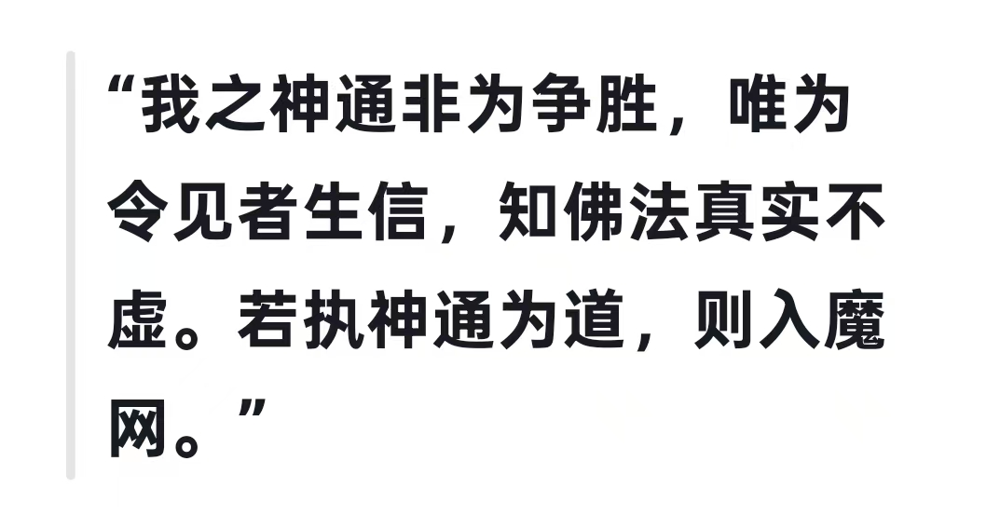

20260801拙火定，也是身体先热起来热起来，不仅化掉疾病，神通异化也必须热起来，超能量发挥
原始对话记录智慧甚微妙，不取诸音声，
觉已无所著，故名为菩萨。
能舍己肉身，终亦无依止，
如是觉真实，乃名为菩萨。
——《大宝积经善住意天子会》[合十][玫瑰]
能舍己肉身，不是要舍弃这个肉体，是了知我不在其中。所以一直提醒，不要抓取这个肉体身为我

密勒日巴
全真派
若菩萨于佛所说弃舍不学，反习外道邪论世俗经典，是名为犯众多犯，是犯染污起。
一一《菩萨地持经》
💜若归佛已，宁舍身命终不依于自在天等；
若归法已，宁舍身命终不依于外道典籍；
若归僧已，宁舍身命终不依于外道邪众。
一一《优婆塞戒经》
@呼和浩特 陈呼和 不是全真派，是密勒日巴尊者说的
华严经提到十神通
我用deepseek搜了一下，举例密勒日巴的神通
飞行跨越珠穆朗玛峰
穿越一座山
等
是藏密
拙火定，也是身体先热起来
热起来，不仅化掉疾病，神通异化也必须热起来，超能量发挥
我小时候，见不到佛经，庙里也没有
九十年代，在一个超市书店里见到一部佛经，标价近三百
99年我上班，一天才发一块钱，买不起
[呲牙][呲牙][呲牙]
00年一天一块六
不过福利好，发衣服，发煤，酒，大米，饭票菜票
写错了，89年上班
九零年一块六
91年改革
我雨法雨，充满世间，
一味之法，随力修行。
如彼丛林，药草诸树，
随其大小，渐增茂好。
诸佛之法，常以一味，
令诸世间，普得具足，
渐次修行，皆得道果。
——妙法莲华经
拙火定：传统里"身体先热起来"的说法
一、本页是什么
本页由一条"拙火定"的短评起头，随后转入经典摘录与讨论——引了《大宝积经》《菩萨地持经》《优婆塞戒经》《华严经》《妙法莲华经》的片段，还提到密勒日巴尊者与"全真派"的辨析。本文把其中关于拙火定的部分与所引经文分开整理，方便检索。
二、拙火定：传统里的"身体先热起来"
本页的核心一句是：
拙火定，也是身体先热起来。热起来，不仅化掉疾病，神通异化也必须热起来，超能量发挥。
这里的"热"，是传统修习体系里的说法——把它理解成身体能量的发动，常与中脉、观想、久坐连在一起（见本集群《中脉的修炼方法》）。需要提醒：本页"化掉疾病"一句属传承中的表述，不是医学结论；有病应就医，勿以此替代治疗。
三、密勒日巴与"神通"举例
讨论中有人以为这是"全真派"说法，本页纠正：是密勒日巴尊者所说。本页还提到《华严经》讲"十神通"，并举例密勒日巴的神通——"飞行跨越珠穆朗玛峰""穿越一座山"等，指出这属藏密一系。这些是宗教文本与传说里的表述，本文照录以存其意，不作评断。
四、本页照录的经文片段
本页摘了几句，值得单独标记：
- 《大宝积经·善住意天子会》："能舍己肉身，终亦无依止"——本页解释为"了知我不在其中"，不是要舍弃肉体，而是"不要抓取肉体身为我"；
- 《菩萨地持经》：讲"弃舍佛说、反习外道"之失；
- 《优婆塞戒经》："宁舍身命，终不依于外道典籍"等三皈之说；
- 《妙法莲华经》："一味之法，随力修行"，如草木随其大小"渐增茂好"。
本页也记下一段个人回忆：早年见不到佛经，九十年代在书店看到一部标价近三百元的佛经买不起等等——属个人经历，本文不展开。
五、常见问题
问：拙火定就是让身体发热吗？ 本页的说法是"身体先热起来"，热是修习过程中的传统描述，不等于发热就是功夫到家。
问：热起来能治病吗？ 不能这样理解。 本页那句属传统说法，本站不提供医疗建议，有健康问题请就医。
问：密勒日巴的神通可信吗？ 那是藏密传记与传说里的表述，本站作为文化文本介绍，不作真伪评判。
六、提醒
- 关键词：拙火定、"身体先热起来"、密勒日巴、十神通；
- 本页的"化掉疾病"是传统表述，切勿据此停医停药；
- 涉及身体反应，本站不提供任何修法或医疗建议；
- 全站按传统文化与文本整理看待，理性参考。